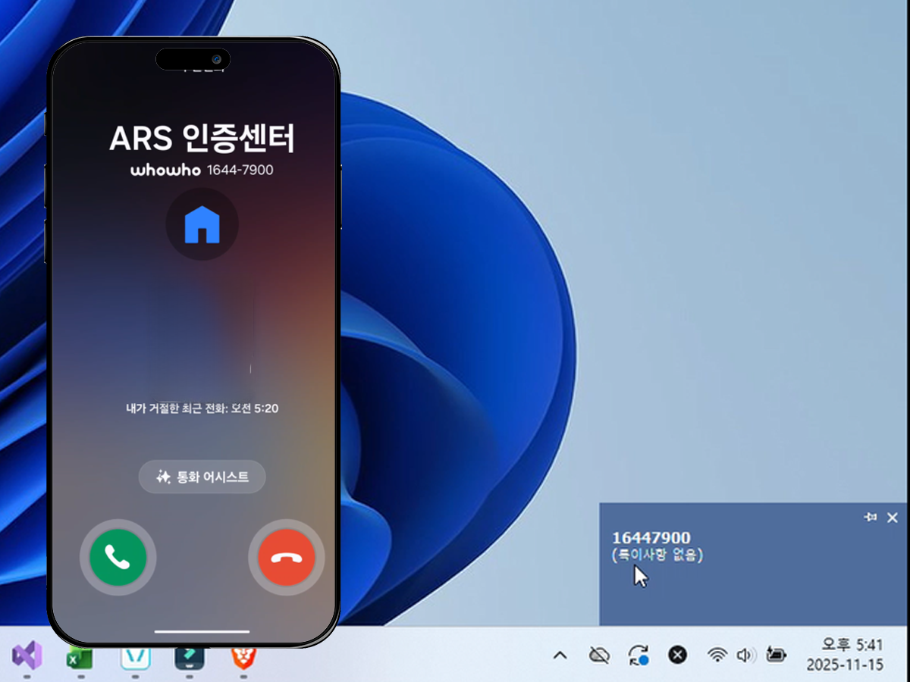
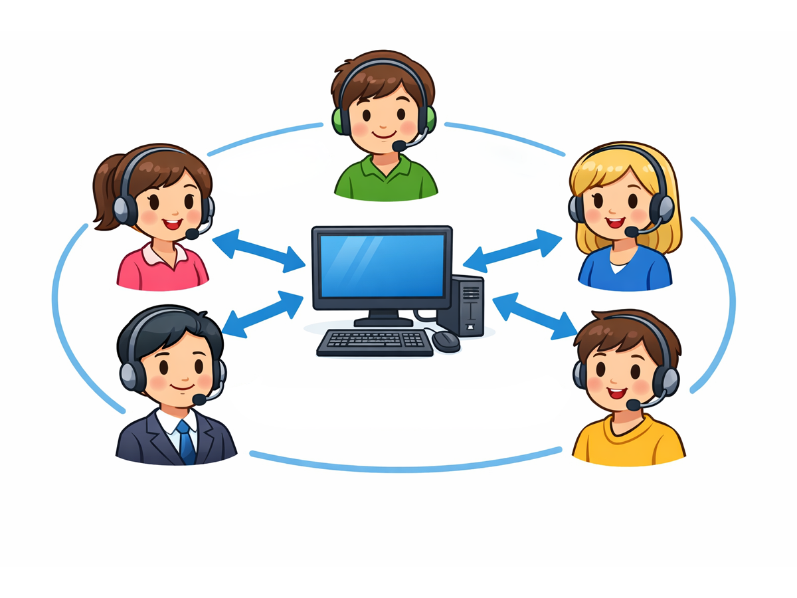
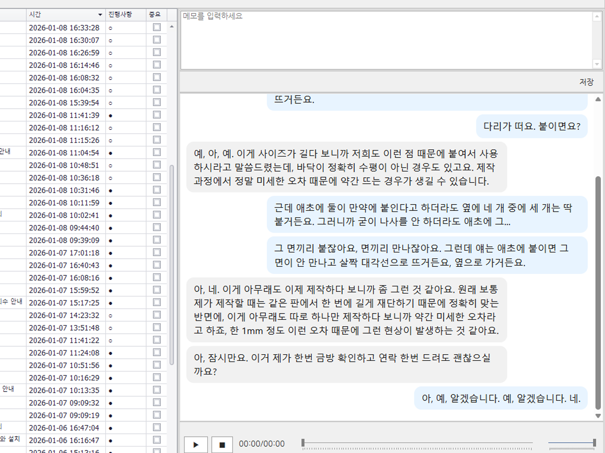

서비스 주요 기능
실제 구동 화면을 통해 강력한 기능을 확인하세요.
Real-time Alert
실시간 알림 및 메모
전화가 울리는 순간, PC 화면 우측 하단에 고객 정보가 즉시 팝업됩니다.
통화와 동시에 메모를 남기세요. 저장된 메모는 다음 상담 때 자동으로 표시되어 빈틈없는 고객 응대가 가능합니다.
- 수신 전화 PC 즉시 팝업 알림
- 통화 중 실시간 메모 기록 및 자동 저장


Team Collaboration
상담 기록 실시간 공유
최대 5명의 상담원이 하나의 팀처럼 움직입니다.
누가 통화 중인지, 어떤 상담을 했는지 실시간으로 동기화되어 중복 업무를 방지하고 효율적인 협업 환경을 제공합니다.
- 최대 5인 상담원 동시 연결 지원
- 상담 이력 및 상태 실시간 동기화
Speech To Text
정확한 STT 음성 변환
통화 녹음 내용을 일일이 듣지 마세요.
고성능 STT 엔진이 통화 내용을 텍스트로 자동 변환합니다.
이제 채팅 내역을 보듯이 통화 내용을 눈으로 읽고 검색할 수 있습니다.
- 통화 녹음 파일 텍스트 자동 변환
- 키워드 검색으로 과거 통화내역 조회


AI Summary
AI 통화 자동 요약
긴 통화 내용의 핵심만 파악하고 싶으신가요?
AI가 전체 대화를 분석하여 핵심 내용을 3줄로 요약해 드립니다.
업무 파악 시간이 획기적으로 단축됩니다.
- AI 기반 통화 내용 자동 분석 및 요약
- 상담 요점만 빠르게 파악 가능